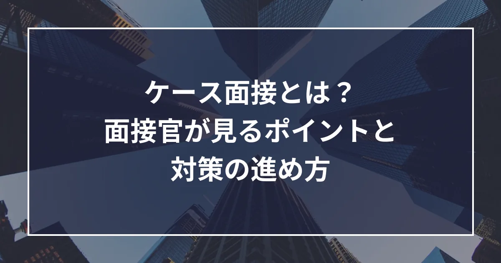

ケース面接とは？面接官が見るポイントと対策の進め方

コンサルティングファームの中途選考では、多くのファームが「ケース面接」を行います。初めて受ける方にとっては、何をどう準備すればよいのかが分かりにくい面接です。
この記事では、ケース面接とは何か、面接官が何を見ているか、どう準備すればよいかを、例題を使いながら順に整理します。
ケース面接とは
ケース面接は、実際のビジネスの課題を、面接官との対話の中で解いていく面接です。たとえば「ある店の売上を推定し、1年で1.2倍にする施策を考えてください」といったお題が出されます。
主要な戦略コンサルティングファームの採用ページでも、見ているのは唯一の正解ではなく、どう考え、どう問題を分け、やり取りの中で考えを発展させるかだと説明されています。
ファームがケース面接を行うのは、主に次の3つを確かめるためです。
・入社後の仕事ができるか：課題を分ける→仮説を立てる→数字で確かめる→提言する、という仕事の流れを、短い時間で試す
・初めての題材でも考えられるか：経歴や知識だけでは分からない、知らない業界でも筋道を立てて考える力を見る
・クライアントの前に出せるか：結論から話す、指摘を受けて考えを直す、といったやり取りの質も、そのまま仕事の質になる
よく出る問題の種類
ケース面接の問題は、大きく次の4つに分けられます。1回の面接で、フェルミ推定のあとに施策を考える、という組み合わせもよくあります。
・フェルミ推定：前提を置いて数を出す（例：国内のエアコンの年間販売台数）
・ビジネスケース：原因と打ち手を考えて提言する（例：地方のホテルの売上を伸ばす）
・資料を読むケース：グラフや表から示唆を出す（例：業績に差がある2社の比較）
・抽象的な問い：社会の課題や業界の将来を論じる（例：地方の人口減少への対策）
進め方にも、面接官が小問を順に出す形（市場規模→要因→打ち手）と、候補者が自分で全体の構造を示して提言まで進める形があります。ファームや面接官によって違うので、どちらにも対応できるようにしておくと安心です。
面接官が見ている5つのポイント
面接官は「この人と一緒に、クライアントの課題を解けるか」を見ています。ステラキャリアズでは、見られている力を次の5つに整理しています。
① 問いをつかむ
何に答えるべきかを取り違えずに始めているか。目的・範囲・目標（何年で何倍か、売上か利益か）を最初に確かめます。
② 構造と仮説
漏れや重なりなく分け、当たりをつけて大事なところから見ているか。分け方を先に示し、「ここが効きそうなので、まずここから見ます」と仮説をつけて話します。
③ 数字と示唆
前提が妥当で、計算が正確か。前提と計算を声に出して桁を確かめ、数字から「だから何が言えるか」を一言添えます。
④ 打ち手
現実に実行でき、効果の大きさまで考えているか。誰に・何を・どうやってまで具体的にし、効果と費用で順番をつけます。
⑤ 対話
結論から話し、指摘や新しい情報を受けて考えを直せるか。指摘が正しければ案を乗り換え、揺さぶられたときは根拠と条件をつけて答えます。
反対に、焦って急ぐ、複雑にしすぎる、質問に答えない、黙り込む、面接官の話を遮る、といった行動は評価を下げます。考える時間がほしいときは、「1分ほど整理させてください」と断ってから、短くまとめましょう。
フェルミ推定の基本
フェルミ推定は、手元に正確なデータが無い数を、前提を置いて計算で出す問題です。まず「誰が買う・使うのか」を考え、数え方を選びます。
・人口から数える：人口×使う人の割合×1人あたりの量（例：歯ブラシ）
・世帯から数える：世帯数×持っている割合×台数÷買い替えの年数（例：冷蔵庫）
・利用から数える：利用者数×利用の頻度×単価（例：美容室）
・会社や施設から数える：事業所や施設の数×1か所あたりの量（例：オフィスのコピー機）
・売る側から数える：店の数×1店の販売数、席数×回転数（例：カフェの売上）
個人向けと法人向けの両方がある商品は、別々に数えて足します。どこまでを含めるか（国内だけか、家庭用だけか）は、最初に面接官と確かめておきましょう。
よく使う数字は、丸めて覚えておくと計算が速くなります。
・日本の人口：約1.2億人（総務省「人口推計」）
・世帯数：約5,700万世帯（総務省「国勢調査」2025年）
・働いている人：約6,800万人（総務省「労働力調査」2025年平均）
計算は上から2桁に丸め（1.23億→1.2億、365日→360日など）、万・億の単位を書きながら掛けると、桁を間違えにくくなります。出した数は1人あたり・1店あたりに直して、感覚と合うかを確かめます。
面接では「別の方法でも出してください」と求められることもあります。買う側（需要）と売る側（供給）の両方から出して突き合わせられるようにしておくと、検算にもなります。
例題で見る進め方：駅前のラーメン店の売上
お題：「駅前のラーメン店1店の1日の売上を推定し、その店の売上を1年で1.2倍にする施策を考えてください」
※数字はすべて、説明のために置いた仮の数字です。
前半：1日の売上を推定する
① 前提を確かめる：「平日1日の、店内で食べるお客さまの売上で考えてよいですか」と、範囲と期間を一言で確かめます。
② 式に分ける：店1つの売上なので、店がさばける数から出します。売上＝客数×客単価、客数＝席数×1時間の回転数×営業時間×席の埋まり具合です。混み方が時間帯で違うので、昼・午後・夜に分けます。時間帯で分けておくと、後半の施策にもつなげやすくなります。
③ 数字を置く：20席で、1人の滞在は約20分なので、1席は1時間に3回転とします。昼（11〜14時）は9割埋まって162人、午後（14〜17時）は3割で54人、夜（17〜22時）は5割で150人。合計約370人×客単価1,000円で、1日の売上は約37万円です。
④ 別の方法で確かめる：駅の乗降客が1日10万人で、そのうち0.4%が来店するとすると400人。同じ桁なので、約370人・約37万円とします。
後半：売上を1.2倍にする
① 目標を金額にする：1.2倍なので、1日あたり約7万円を上乗せします（約37万円→約44万円）。
② 伸びしろを見る：昼はほぼ満席で、行列を見てあきらめるお客さまを逃しています（上限は席の数）。午後は空席が多く（上限は来るお客さまの数）、客単価もセットメニューで上げる余地があります。伸ばすのは、昼・午後・客単価の3つです。
③ 打ち手を考える：
・昼：券売機を増やし、注文を待たせずに提供を早める（1時間3回転→3.5回転で＋27人、＋約2.7万円）
・午後：近くで働く人や学生向けに、午後限定のセットを出す（席の埋まり具合3割→4.5割で＋27人、＋約2.7万円）
・客単価：ご飯ものやトッピングのセットを勧める（1,000円→1,050円で＋約2.1万円）
④ 順番をつける：費用が小さくすぐできるセットの案内→効果の大きい昼の回転（券売機の設置に費用がかかる）→集客に時間がかかる午後、の順に進めます。合計で客数約420人×1,050円＝約44万円となり、1.2倍に届きます。
⑤ 結論とリスクを伝える：「客数の増加で約7割、客単価で約3割を埋めます。午後の客数が想定ほど伸びなければ、持ち帰りの販売を始めて補います」と、結論→根拠→リスクの順で伝えます。
ポイントは、前半で立てた式が、そのまま後半の施策の地図になることです。どの要素（席の回転・埋まり具合・客単価）をどれだけ動かせば目標に届くかを数字で示せると、提言の説得力が増します。状況を押さえてから打ち手を考える方法は、ケース面接の思考法「SCR」の解説も参考にしてください。
対策の進め方：3つの段階
1. 型と基本の数字を覚える
フェルミ推定の数え方と、人口・世帯数などの基本の数字を、何も見ずに言えるようにします。
2. 時間を計って、声に出して解く
推定は3〜5分、施策まで含めて20〜30分を目安に、式と計算を声に出しながら解きます。ステラキャリアズの面接対策の記事では、ケース面接で問われるようなお題と、考え方のヒントを紹介しています。
・熱海の観光客数の推定と、観光客を増やす施策（ケース面接練習 vol.1）
・サランラップの年間消費量の推定と、売上の拡大策（ケース面接練習 vol.2）
・マクドナルド六本木駅店の年間売上の推定と、売上の向上策（ケース面接練習 vol.5）
3. 人と練習し、指摘をもらう
面接官から質問され、揺さぶられながら考えを直していく練習は、1人ではできません。友人や経験者に面接官役を頼み、受けた指摘を次の練習に反映しましょう。
対策を重ねて戦略ファームに内定した方の話は、ケース面接対策の体験記で紹介しています。
面接当日の心得
・紙とペンを用意する。オンラインの面接では、最初に「メモを取りながら考えます」と伝える
・考えていることと計算を声に出し、面接官が途中の経過を追えるようにする
・大事な数字や結論は、はっきりと伝える
・面接官の反応や追加の情報を聞き、必要なら考えを直す
・分からないことは、前提として確かめてから進める
まとめ
ケース面接は、正解を当てる試験ではなく、問いをつかみ、筋道を立てて考え、面接官とのやり取りの中で考えを深めていく力を見る面接です。型と基本の数字を覚え、時間を計って声に出して解き、人と練習して指摘をもらう、という順で準備を進めましょう。
ステラキャリアズでは、外資系コンサルティングファームで面接官を務めた経験のあるコンサル出身者が、ケース面接を含む選考の対策をサポートしています。志望先に合わせた対策を相談したい方は、お気軽にご相談ください。
面接対策の一覧へ